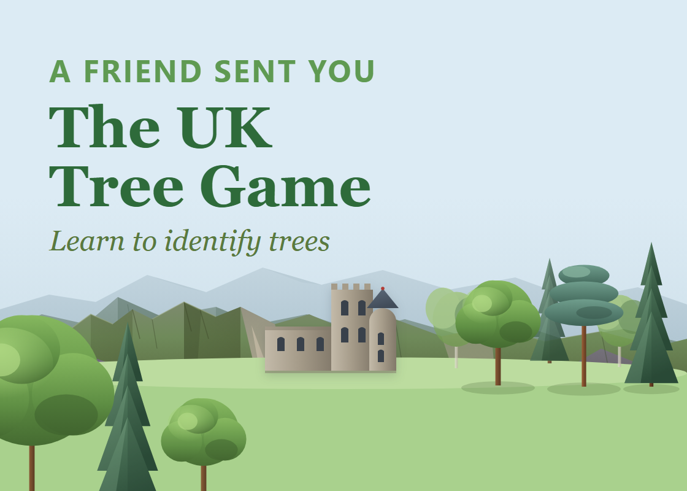
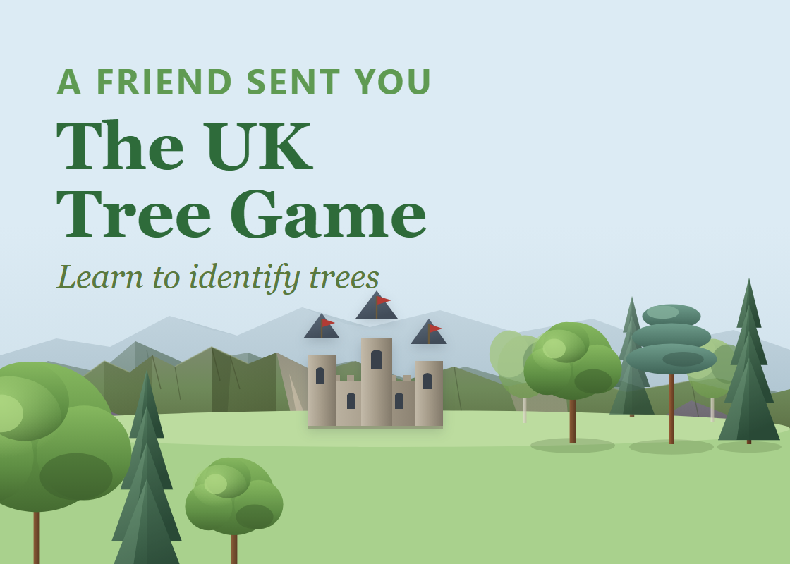
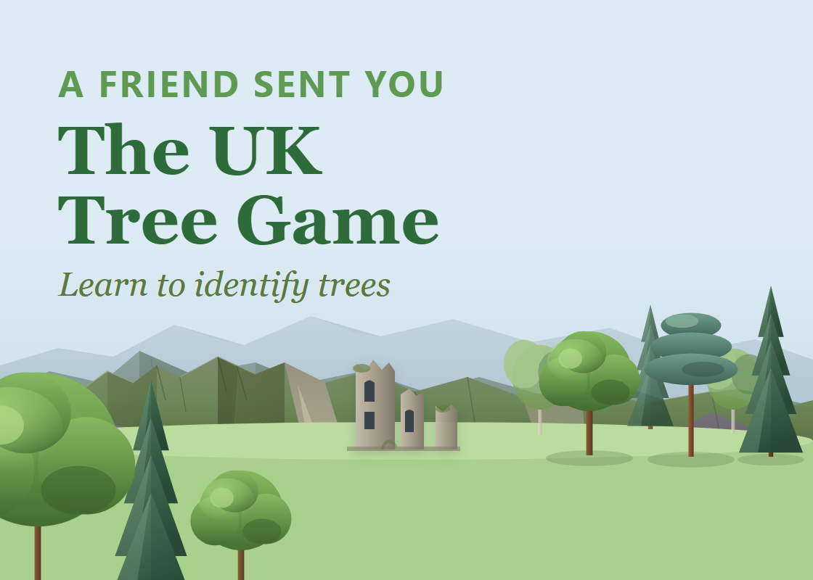
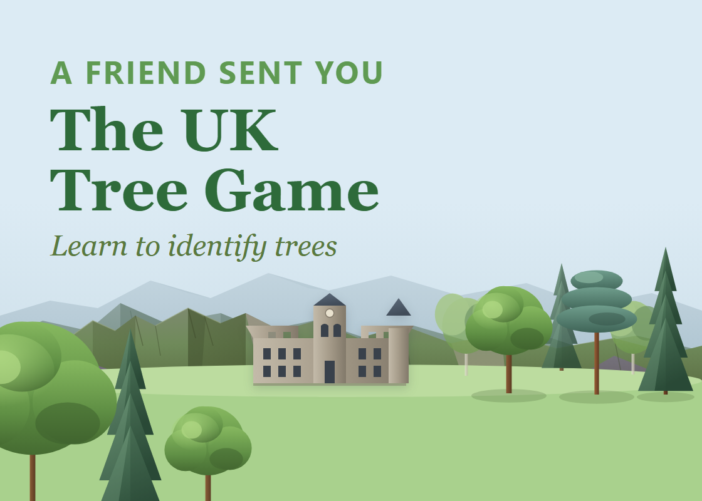
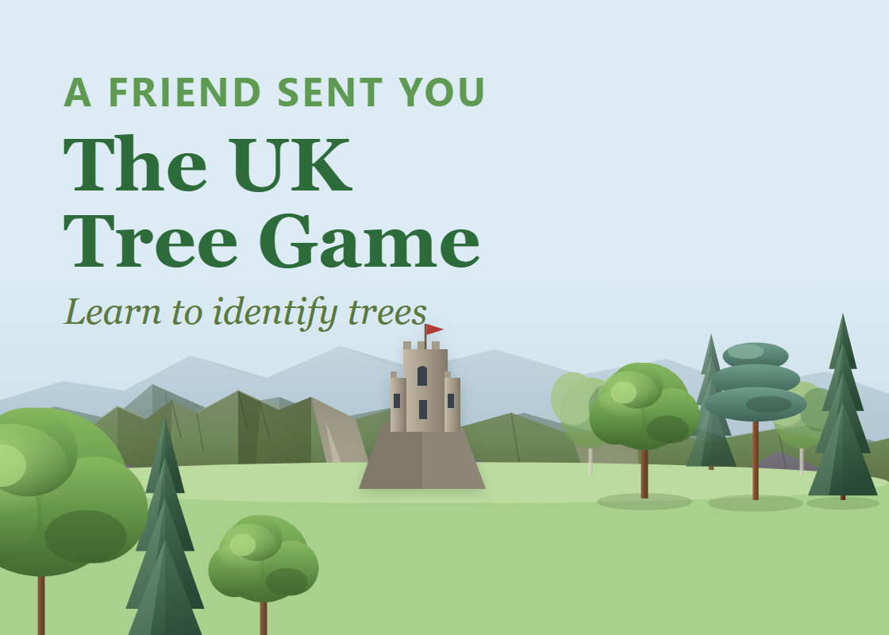
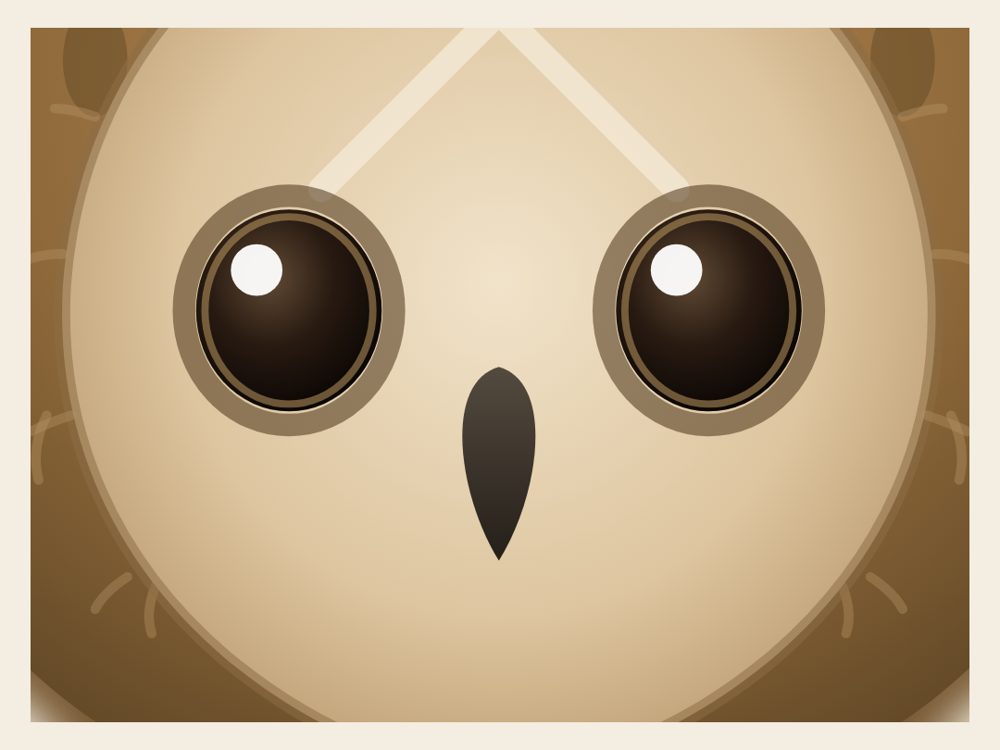
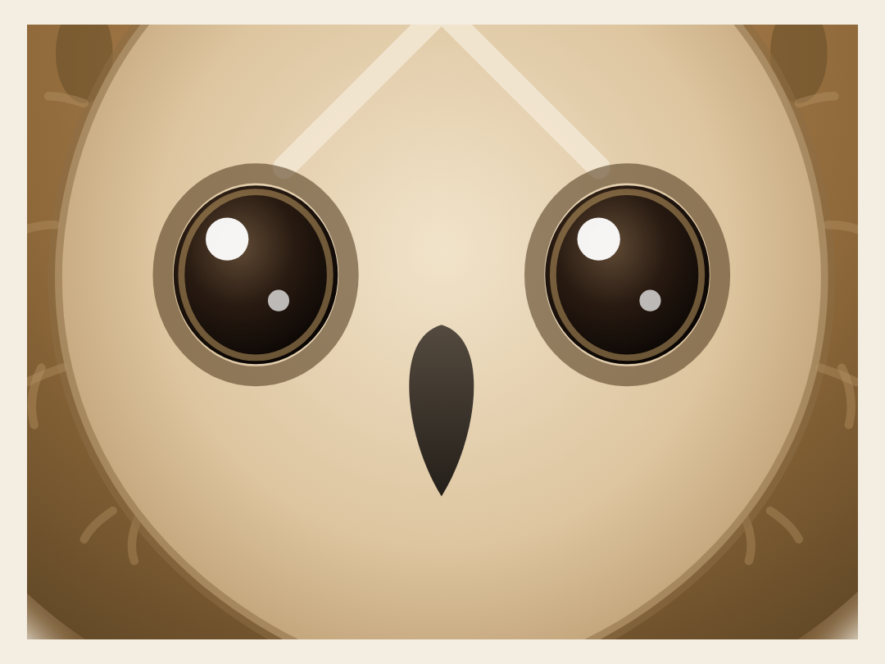
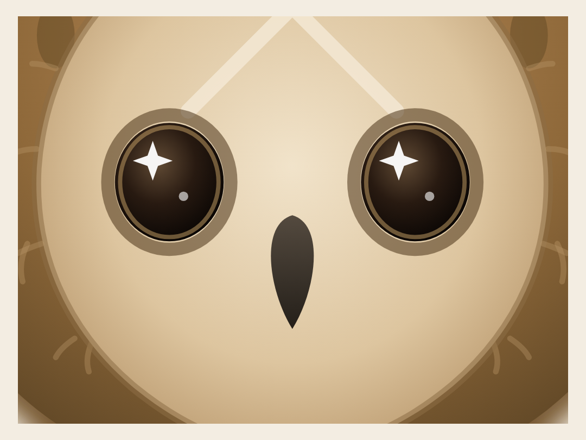
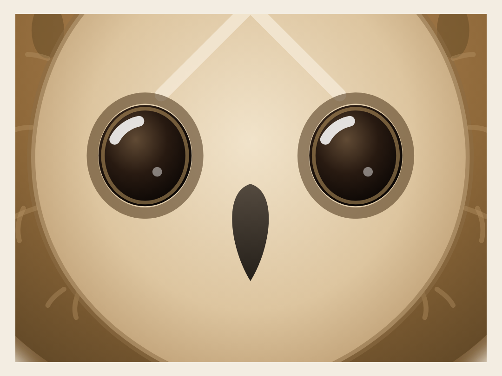

🦉 Owl Lab — castle & sparkle options
Pick by number, e.g. "castle 4, sparkle 2" (or "no castle"). The GIF at the bottom has the drop fixes you asked for.
① Scottish castle in the background — 5 options
Shown in the real scene. It sits on the hills behind, left of the trees.

1 · Baronial tower house
Tall crenellated keep + round turret.

2 · Fairytale turrets
Three towers, pointed slate roofs + flags.

3 · Romantic ruin
Broken towers & crumbling wall — atmospheric.

4 · Balmoral-style house
Long baronial mansion, crow-step gables.

5 · Clifftop keep
Narrow keep perched on a crag, flag flying.
② A little sparkle in the eyes — 5 options
On the chosen Variant A owl (shown awake, zoomed to the face).

1 · Bright dot
Single clean catchlight.

2 · Twin
Main glint + small second highlight (livelier).

3 · Star ✦
A little four-point twinkle.

4 · Crescent
Soft crescent shine (storybook).
5 · Glint + wet
Top glint + soft lower reflection (deep, glossy).
③ The share GIF — drop fixed
Envelope now drops between the two trees with the original's gentle rotate + settle motion; flight is the slower pace; 2s letter-alone shot kept.
No castle yet — I'll add your pick